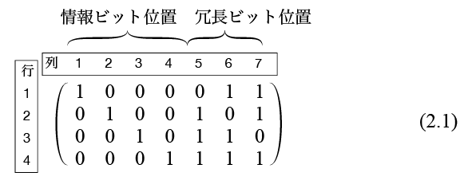

3回繰り返し符号を用いると，ブロックが誤って復号される確率を 低減することができるが，送りたい情報の 3 倍の文字を送らなければ いけなくなることを前回示した．これを符号化率 $R$ が $1/3$ である と表現した．符号化率は送信した文字数に含まれる情報の割合を示す． 符号化率が 1/3 の符号は大量の文字を送信しても送れる情報が その 1/3 という意味で効率が悪い．次に 3 回繰り返し符号と同じ 1 ビットの誤り訂正能力をもつ効率のよい符号，[7,4]ハミング符号を 紹介する．符号の名前に $[n,k]$符号と付いている場合，符号化器の 入力が $k$, 出力が $n$ ビットであることを表す．3 回繰り返し 符号の符号化器は 1 ビットの入力をそれを3回繰り返した3ビットの出力に 変換するので [3,1] 3回繰り返し符号という．[7,4] ハミング符号 の符号化器は 3 ビットの入力から 4 ビットの符号語を出力する．
[3,1]3回繰り返し符号であれば符号化器の入力は 1 ビットなので入力は 0,1 の 2 通りあり，符号語は {000, 111} の 2 個である． 1 ビットの全パターン（{0,1} の2種類）に表2.1のように 3 ビットの 符号語が割り当てられている．
表 2.1 3回繰り返し符号
| 情報（入力） | 符号語（出力） |
|---|---|
| 0 | 000 |
| 1 | 111 |
[7,4]ハミング符号の符号化器のは 4 ビットの入力をもつので 入力は 4 ビットの全パターン {0000, 0001, 0010, 0011, 0100, 0101, 0110, 0111, 1000, 1001, 1010, 1011, 1100, 1101, 1110, 1111} で 16 種類ある．それぞれに 表 2.2 のように 7 ビットの符号語が割り当てられている．
表 2.2 [7,4]ハミング符号
| 情報（入力） | 符号語（出力） |
|---|---|
| 0000 | 0000000 |
| 0001 | 0001111 |
| 0010 | 0010110 |
| 0011 | 0011001 |
| 0100 | 0100101 |
| 0101 | 0101010 |
| 0110 | 0110011 |
| 0111 | 0111100 |
| 1000 | 1000011 |
| 1001 | 1001100 |
| 1010 | 1010101 |
| 1011 | 1011010 |
| 1100 | 1100110 |
| 1101 | 1101001 |
| 1110 | 1110000 |
| 1111 | 1111111 |
符号はこのように全入力情報と対応する符号語の表で表すことができるが， [7,4]ハミング符号は表2.3の4行7列の行列だけでコンパクトに記述することができる．

図2.1 [7,4]ハミング符号の生成行列
式(2.1)を [7,4] ハミング符号の生成行列 という． 左から 4 個の列を情報ビット位置，残りの 3 個の列を 冗長ビット位置という． 生成行列を行（横方向）単位にみると，4 つの行は 4 つの符号語 1000011, 0100101, 0010110, 0001111 を表す．符号語の情報ビット位置，すなわち最初の 4 文字がその符号語に対応する情報ビット（入力）を表す． 例えば生成行列(2.1) の第1行 1000011 は情報ビット（入力）1000 に対する符号語（出力）を表し，第2行 0100101 は情報ビット 0100 に対する符号語を表す．
それ以外の符号語は生成行列(2.1)の行のビットごとの2を法とする和で 得ることができる． 例えば第 1, 2 行の和から 1000011 + 0100101 = 1100110 が得られるが， これは情報ビット 1100 に対応する符号語である．
生成行列(2.1)の各行は独立，すなわちどの行も他の行の和から作ることが できない．このため生成行列の和は $2^4 =16$種類あり，表2.2の 符号語と一致する．これを利用して生成行列(2.1)だけあれば任意の 4 ビットの符号化を行うことができる．例えば情報ビットが 1011 であれば 生成行列(2.1)の第1,3,4列の和を求めることで符号語 1011010 が得られる．
[7,4]ハミング符号の復号法について説明する．原理を理解するためには
後に説明するのシンドローム復号の理解が必要だが，復号アルゴリズムの
説明だけを行う．復号には以下の 3 つのベクトル
\[
\vec{a}=0001111,\\
\vec{b}=0110011,\\
\vec{c}=1010101
\]
とベクトルの内積を使う．一般にベクトル $\vec{x} = (x_1, x_2, \ldots, x_n)$
とベクトル $\vec{y} = (y_1, y_2, \ldots, y_n)$ の内積
$\vec{x}\cdot\vec{y}$ は
\[
\vec{x}\cdot\vec{y} = \sum_{i=1}^n x_iy_i \ \ \ (\mod 2)
\]
で定義される．例えばベクトル 1111100
と 1010101 の内積は
1$\times$
1
+ 1$\times$
0
+ 1$\times$
1
+ 1$\times$
0
+ 1$\times$
1
+ 0$\times$
0
+ 0$\times$
1
(mod 2)
= 1+0+1+0+1+0+0 (mod 2)
= 1
である．
送信者が送りたい 4 ビットのメッセージが 1011 だったとする． 符号化は生成行列(2.1) の第 1,3,4 行の法を2とする和で得られる. これそ送信語 $\vec{x}=1011010$ とする．
送信中にエラーが起こって，受信者は受信語 $\vec{y} = 1010010$ を受け取ったとする．このケースでは符号語の 4 番目の文字だけが エラーにより反転している．このような誤りを誤りベクトル $\vec{e} = \vec{y} - \vec{x}$ を使って $\vec{e} = 0001000$ の誤りが起こったという．
受信者は送信者が何を送ったか（$\vec{x}$）や，どんな誤りが 起こったか（$\vec{e}$）を知らず，誤りが起こった後の 受信語 $\vec{y}$ だけを知っている．復号はハミング復号 と呼ばれる方法で行われる．ハミング復号は受信語 $\vec{y}$ と先に述べた3つのベクトル \[ \vec{a}=0001111,\\ \vec{b}=0110011,\\ \vec{c}=1010101 \] それぞれとの内積を求めることで行われる．今回の例では $\vec{y} = 1010010$ だから，$\vec{y}\cdot\vec{a}=1$, $\vec{y}\cdot\vec{b}=0$, $\vec{y}\cdot\vec{c}=0$ となる．これを順に結合した 100 を 2 進表記として読むと値は 4 である．この数字が誤りが起こった場所を 示す．この例では左から 4 ビットめが誤っていることを示すので $\vec{y}$ の 4 ビットめを反転させた 1011010 が復号結果となり， もとの送信語 $\vec{x}$ に復元できていることがわかる．
ハミング符号を用いることで 1 ビットのいかなる誤りも訂正できる． 着目すべきは 3 回繰り返し符号の符号化率が 1/3 であったのに対し， [7,4] ハミング符号の符号化率は 4/7 であるという点である． 冗長ビットを加え符号化しても送らなければならないビット数は 元の情報のビット数の 2 倍よりも小さい （3回繰り返し符号では 3 倍送らないといけない）ことである．
[7,4]ハミング符号についても通信路がBSC（2元対象通信路）であったときの 誤って復号する確率がどの程度改善されるかを計算する． 例として $p=0.1$ の BSC を使う場合を考える．
符号化を行わずに4ビットのブロックを通信した場合は 4 ビットとも 正しく受信される確率は $(1-p)^4$ だから $0.6561$，よってブロックが 誤って復号される確率 $P_{err}=0.3439$ である．
一方，[7,4]ハミング符号を用いた場合のブロック全体が正しく復号される 確率を考える．符号化された送信語 7 ビットにノイズがのった受信語が 正しく復号されるのは
場合で，その時のみである．7ビットのどこにもノイズによるビット反転が 起こらない確率は $(1-p)^7$ である．また，最初の 1 ビットに のみノイズによるビット反転が起こる確率は $p(1-p)^6$ であり， 2 番目のみ，3 番目のみ，... 7 番目のみが反転する確率も全て 同じだから，7 ビットのうちどこか 1 ビットにビット反転が起こる 確率は $7p(1-p)^6$ である．正しく復号される確率はこれらの 和なので $(1-p)^7 + 7p(1-p)^6 = 0.8503$ である．結局[7,4]ハミング 符号を用いた場合に誤って復号される確率 $P_{err}=0.1497$ となり 符号化しなかった場合の半分以下に軽減されていることがわかる．
ハミング復号はコンピュータを使わずに手作業でできるほど 簡単な復号法であった．研究者はコンピュータが必要な レベルの計算量まで許す条件でより良い符号がないか 研究を続けてきた．ここでより良い，というのは 誤って復号される確率が小さく，符号化率が高い符号，という 意味である．そのような符号として注目されたのは [23,12]ゴレイ符号である．パラメーターからわかるとおり， この符号は符号語長（符号化器の出力）は 23 で，情報ビット数は 12, 冗長ビット数は 23-11=12 の符号である．
[23,12]ゴレイ符号は復号法が複雑で，計算機を用いて復号されるが 3 ビット以下の任意の誤りを訂正できることが知られている．
なぜ複雑なゴレイ符号を研究する価値があるのかを説明する． [23,12]ゴレイ符号の代わりに[7,4]ハミング符号を使うとする． この場合 4 ビット入力，7 ビット出力 [7,4] ハミング符号の符号化器を 前，中，後の3 ブロック続けて使うと 12 ビット入力， 21 ビット出力の [21, 12] 符号として考えることができる． この符号は [23,12]ゴレイ符号と同じ 12 ビットの情報ビットを 符号化できる．この符号の符号化率はもとの符号と同じ $4/7=0.571$ である．
この [7,4]ハミング符号を前，中，後と 3 つ並べた符号は 出力 23 ビットのうち 2 ビットがノイズで反転した場合， その反転ビットが前，中，後の別々のブロックで生じた 場合は正しく訂正できるが，同じブロックで誤りが起こった 場合に誤って復号される．3 ビットの誤りが起こった場合に ついてはそれが都合よく前，中，後のブロックに 1個づつ分散した場合だけ正しく復号され，それ以外は 誤って復号される．
一方，[23,12]ゴレイ符号であれば 23 ビットのうち 3 ビットまでならいかなる位置のビットが誤っても正しく 復号される．このため [23,12]ゴレイ符号のほうが誤って復号 される確率が低い．[23,12]ゴレイ符号の符号化率は $12/23=0.522$ で [7,4]ハミング符号に近い．
一般に[7,4]ハミング符号と [23,12]ゴレイ符号の関係のように，符号語長の大きな符号のほうが 誤り訂正能力は高いが復号に必要な計算が複雑になる．この理由は， [7,4]符号は受信語としてありうるベクトルの総数が $2^7=128$， そのうち送信される可能性のある符号語の総数は $2^4=16$ である． つまり，復号は 128個のうちのどれかである受信語から 16 個の 符号語のうち最も良いものを選ぶ作業である一方， [23,12] 符号は $2^23=8,388,608$ 個のうちのどれかである 受信語を入力として $2^12=4096$個の符号語の候補の中から 最適なものを選ぶ作業となるために計算が複雑になる．さらに複雑な [47,24]平方剰余符号という符号があり，この場合は140兆個の 受信語から16百万個の符号語の候補の中から選ぶ作業となり より計算が複雑になる．一般的に使われる符号では符号語長は 数百の場合が多い．
符号理論の最も偉大な成果の一つがシャノンの通信路符号化定理 である．概要を説明すると，通信路はその誤り確率 $p$ に応じて 通信路容量と呼ばれる値 $C$ が決まり，符号化率が $C$ 以下 であれば符号語長を大きくすることでいくらでも誤って復号される 確率が 0 に近い符号が存在する，というものである．
これは当時の研究者の直感に反する結果で，大きな驚きを与えた． 直感的には誤って復号される確率を低くするには 冗長度と高める，すなわち符号化率を下げる必要があると信じられていた． 一般の人は今でもそう思っているかもしれない．しかし，シャノンが 示したことは，符号化率が同じでも好きなだけ誤り確率が 0 に近い 符号が存在する，ということである．
しかし，実際に誤って復号する確率を極端に小さくするには 符号語長を大きくしなければならず，復号のための計算量が現実的でなくなる． シャノンは証明をそのような符号が「存在する」ことを巧妙に示したので 「どうやってその符号を作るか」は示されておらず，これが研究者に 残された仕事となっている．
現実的にはシャノンが予言した高性能な誤り訂正能力をもつ 符号の実用化を阻んでいるのは復号の計算量が大きくなることである．
現実的な高性能符号として代数幾何符号の研究がなされている． これには数学の代数幾何の知識を必要とする．
この授業では誤りがランダムに起こるケースを扱い， 符号として計算が簡単である線形符号のみを扱う． 線形符号とは $\vec{a}$ と $\vec{b}$ が符号語である場合， ベクトル $\vec{a}+\vec{b}$ も符号語であるような符号のことである． この性質がいろいろな計算を簡単にし，構造が単純になる．
シャノンの定理は線形符号以外も含んでいるが線形符号に限っても 同様なことがいえるので対象を線形符号に限定することに正当性がある．
他にもストレージ用の符号，誤りがランダムでなく固まって起こる 状況のためのバースト誤り訂正符号， ブロックではなくシンボルごとに符号化する畳み込み符号などが あるが，この授業では扱わない．情報ビットをどの符号に割り当てるか， という問題もあり，これは情報ビットが偏って出現する場合の 情報圧縮の問題である．この問題は情報源符号化という重要な 技術であるが，この授業では扱わない．
前節ではハミング符号を生成行列で定義した．生成行列により 線形符号を定義することができるが，もう一つの方法として 検査行列で定義することもできる．この授業では 2 元符号について 説明する．
符号語長 $n$ の 2 元符号を考える． $n$ ビットの文字列の ベクトルは全部で $2^n$ 通りある．これら全てからなる 全体集合である2元のビット$n$項の空間を $V$ と書く． $V$ の要素は $2^n$ 個ある長さ $n$ の全てのビットパターンで， 要素どうしの加算はビットごとの mod 2 の加算で行われるものとする．例えば \[ 100011+010101 = 110110 \] である．
[n,k]2元線形符号を厳密に定義すると，$V$ を長さ $n$ の 2 元ベクトルの 全体集合としたとき，$V$ の要素のうち $k$ 個の独立したベクトルを選び， その $k$ 個のベクトルの全ての線形和で得られるベクトルと定義できる． これは数学的には $V$ の $k$次元部分空間である．
例えば $n=7$ とすると全体空間 $V$ は 7 ビットの2元ベクトルの 全パターンの $2^7=128$ 個である．[7,4]ハミング符号の生成行列(2.1)の 4個の各行 1000011, 0100101, 0010110, 0001111 は独立（どれも他の要素の和 で作ることができない）であり，これらのビットごとの mod 2 の和で 作ることができる全てのベクトル（表2.2）が [7,4] 2元線形符号に なっている．
線形符号が線形部分空間であるのに対し，非線形符号は単に 全体集合の部分集合である．この授業では線形符号を扱う．
生成行列
\[
\left(
\begin{array}{rrr}
1&0&1\\
0&1&1
\end{array}
\right)
\]
で生成される符号があり，最初の 2 列が情報ビット位置であるとする．
全ての符号語とそれに対応する情報ビット（入力）を書け．
授業の6日後までにメールで提出せよ．
メールの件名（サブジェクト）は CT02 とせよ．